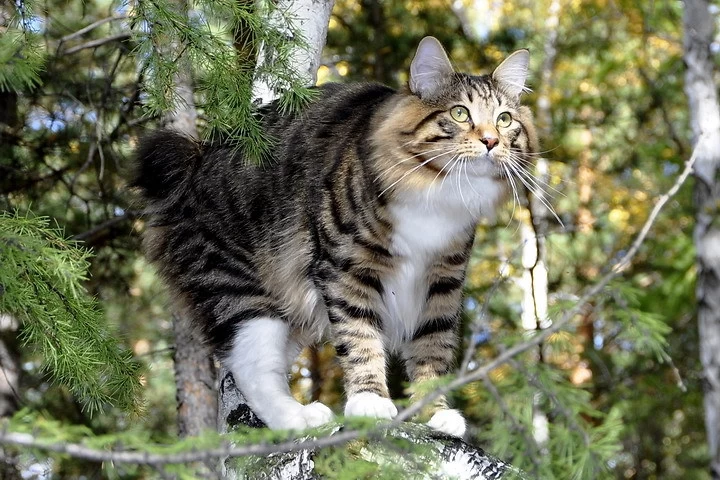

Курильский бобтейл – это удивительная кошка с пушистым помпоном вместо хвоста. Она умеет охотиться, как рысь, прыгать, как заяц и любить своего хозяина, как самый преданный в мире пес. Порода зародилась в суровых условиях Курильских островов, но теперь распространена по всему миру
Как именно появилась порода курильских бобтейлов, до сих пор точно неизвестно. Эти кошки впервые появились на Курильских островах (отсюда и название) в результате естественного скрещивания японских бобтейлов и русских сибирских кошек, которых завезли на острова русские купцы и рыбаки. Эти проворные животные с хвостами-помпонами прекрасно прижились в условиях сурового климата: научились превосходно ловить рыбу и грызунов. Иногда необычных кошек привозили на «большую землю» в качестве живых сувениров, но всерьез породой заинтересовались только в конце 80-х годов ХХ века. Изначально фелинологи не делали различий между японскими и курильскими бобтейлами, но позже обратили внимание, что строение тела, форма головы и шерсть значительно отличаются от японских сородичей. В 1991 году московская заводчица Ольга Миронова разработала стандарт породы, который утвердила советская фелинологическая федерация. А в 1994 году новая порода была официально мировыми специалистами. Сейчас по всему миру насчитывается более сотни питомников курильских бобтейлов: преданные кошки с необычной внешностью быстро завоевали любовь и уважение у своих владельцев.
Иногда курильского бобтейла называют «домашней рысью» из-за похожего окраса и охотничьих повадок. Хотя сами кошки сравнительно небольшого размера, их тело обладает крепкими костями и развитой мускулатурой. Конечности средней длины, с крепкими широкими лапами. Голова напоминает треугольник: округлый лоб, массивные щеки, сильный подбородок и прямой нос. Уши среднего размера: широко разведены и слегка наклонены вперед, с густой «щеткой» на внутренней стороне. Миндалевидные глаза среднего размера соответствуют окрасу тела: чаще всего желто-зеленого цвета. Визитной карточкой породы, несомненно, является короткий загнутый хвост, напоминающий пушистый помпон. Его длина составляет примерно 5-9 сантиметров (в нем находятся от 2 до 9 позвонков), при этом хвост очень подвижен. Легенды гласят, что благодаря своему уникальному хвосту бобтейлы легко цеплялись за ветки во время охоты, без риска свалиться в воду. Короткий хвост – это не мутация, а потому никакой опасности для здоровья кошки не представляет. Что касается шерсти, то она очень плотная, с густым подшерстком, и при этом совершенно не промокает. Выделяют короткошерстных курильских бобтейлов (шерсть более длинная на задней части тела) и полудлинношерстных (у них шерсть длинная и тонкая). Шею и грудь кошки украшает пышный воротник, а сама шерстка очень шелковистая и практически не линяет, так что подходит и для аллергиков. Окрасы самые разнообразные: рыжий, белый черный, биколор и табби. Единственное, что не допускается абиссинский окрас и колор-пойнт. Популярны тигровый, мраморный и пятнистый окрасы, тогда курильский бобтейл еще больше напоминает рысенка.